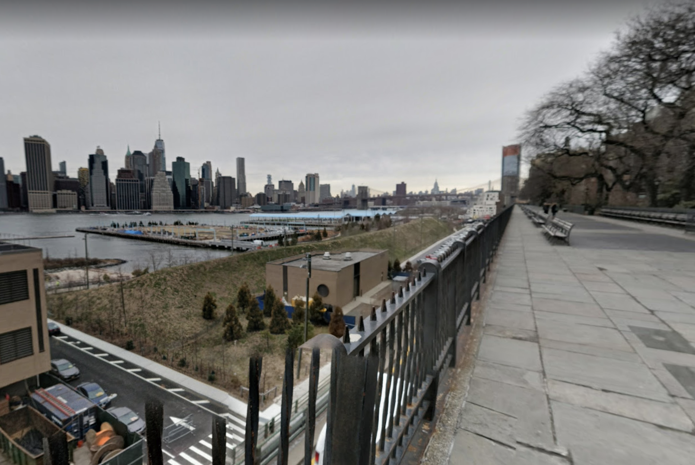
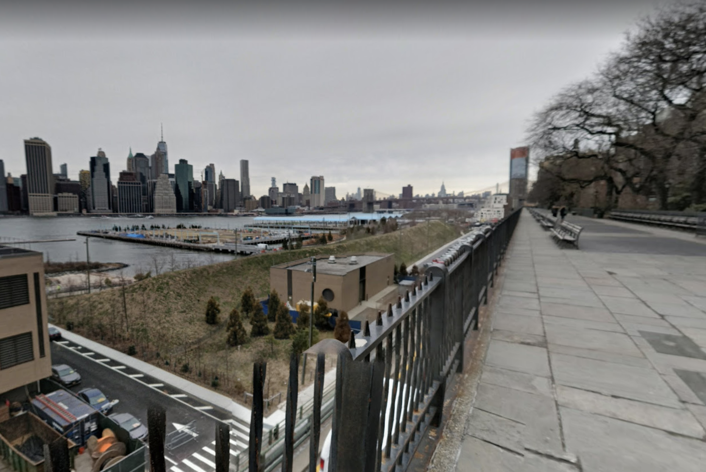
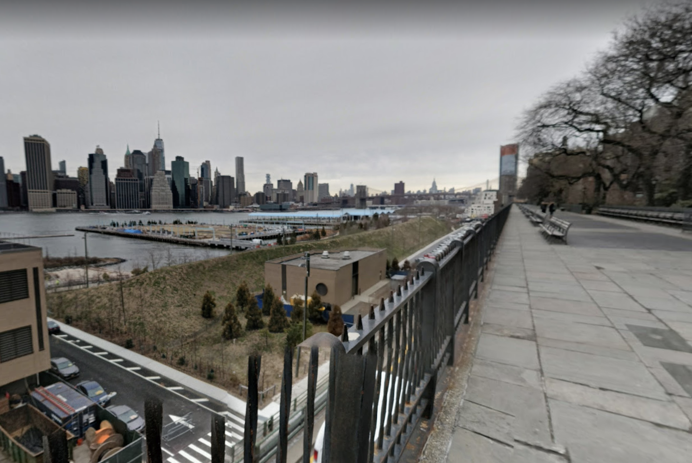

Its hard for me to think spatially sometimes. I guess also I feel a bit allergic to sensors in general. Who needs another sensor? Everything is already being sensored. There is an obvious argument here which is what isn't being captured and why.
Yesterday I went to see Shannon Mattern talk at Columbia's GSAPP program. The talk was titled "Mapwashing: Co-Opting and Reclaiming Civic Design". It was interesting to be in a room of architecture / design students discussing big tech and the implications of geospatial mapping, data collection, and neoliberal urbanism. Some things that I am still thinking about are the co-opting of a kind of inherent aesthetic of community planning, the illusion of community engagement in large corporate projects, and how maps can be much less evident of place than local data, community-built archives and oral histories, and how maps can also be so much more than just points and perimeters.
I suppose I'm still digesting some of this information but the talk got me thinking more deeply about my relationship to physical space through digital maps. How often I look at Google maps before I leave my house if I'm going to midtown or a neighborhood that I don't usually spend time in. How I quickly scroll and drag my cursor between subway stops and coffee shops so that I can make sure I know where everything is when I get there. How sometimes I make the choice of not looking at a map so that I can happen upon somewhere without preconception and how this makes me feel more connected to that place, how I more easily remember how I got there and what's around it.
Somehow I got to this idea. I think a lot about the computer mouse, its history, its teleology, its potential to be used without a GUI. I would like to place a mouse in a physical space. Lets say the Brooklyn Heights Promenade (where my arts of noticing project is taking place). The signage near the mouse will instruct whoever is using the mouse to scroll the wheel until they arrive at a certain place, lets say the other side of the East River. The computer (microcontroller) connected to the mouse will count 1 full turn of the scroller as 1 meter. The distance between the Promenade and the east side of Mahattan is about 900 meters. The person using the mouse is asked to meditate on where they are going while scrolling until they reach their destination. What's being measured here is probably just patience but also how many scrolls it takes to get to a given destination.

Is this a terrible idea? For me its raising questions about immaterial labor, how to make scrolling material, how long can you scroll before you get tired, its just your pointer finger thats being used, how does the rest of the body feel, where is the mind, is this a meditative practice, is something slowed down?

 what does it mean to notice something from afar? what will i pay attention to or be distracted by while trying to pay attention to the building? how is my experience of paying attention to this construction mediated by time, sound, place?
what does it mean to notice something from afar? what will i pay attention to or be distracted by while trying to pay attention to the building? how is my experience of paying attention to this construction mediated by time, sound, place?


I have decided spend time noticing the New York City skyline. I will focus specifically on a new construction which has already in its height altered the shape of the skyline if you are looking at it from the east side of the east river.
This new construction is located at 161 Maiden Lane in Manhattan. Today I sat for 20 minutes on the Brooklyn Heights Promenade and noticed this building. I squinted my eyes to see if could see people, instead the only thing I saw moving was the construction elevator on the side of the building. I heard a lot of ambient noise and at times the sounds of helicopters above me or large trucks just below me.
There is a lot of controversy around the construction of this building. The developers have received a bunch of stop work orders due to unsafe working conditions. A construction worker fell to his death while working on this building.
im interested in noticing change in something that it is usually hard to see change in. in my experience buildings just pop up out of nowhere. sometimes they are under construction "forever", at times i can't even picture what was there before them
It was an interesting day to watch the skyline. Today, 9/11/19 marks 18 years after the twin towers fell. They were once an iconic part of the skyline. On my way to the promenade I was listening to the radio and the show had invited on Mary Marshall, a historian and librarian, who has been putting together oral histories of 9/11 since it happened in 2001. A few people from in and around New York came onto the radio show to share their own stories. The histories were deep and ranging in terms of their perspective. One that stuck with me was the acknowledgement of the towers as a part of the speaker's architectural memory. In other words, she was always orienting herself in the city by looking up to see where the towers were.
I suppose I was left wondering what parts of New York play a part in my architectural memory. I remember getting out of the Broadway Lafayette station recently and being immeadiately disoriented in the directional sense. Even though I have exited this station so many times over many years the arrival of a new big glass construction taking up the entire southern block of Houston between Broadway and Crosby St threw me off.
At one time there was a gas station there. Its so fucked up to feel some kind of nostalgia for a gas station but I guess this was one of the last left in a neighborhood that used to be referred to as "gasoline alley". There was also a fruit stand which had been there since 1980 but closed in 2014.